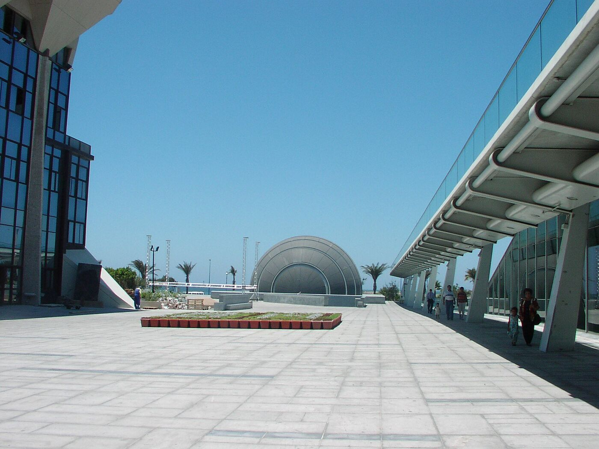

قلعة قايتباي
حصن بحري بناه السلطان قايتباي في القرن الخامس عشر عند مدخل الميناء الشرقي، في موقع منارة الإسكندرية القديمة.
مدينة ساحلية على البحر المتوسط تجمع بين التاريخ القديم والإسلامي والحديث.
حصن بحري بناه السلطان قايتباي في القرن الخامس عشر عند مدخل الميناء الشرقي، في موقع منارة الإسكندرية القديمة.

مكتبة ومركز ثقافي حديث افتتح عام 2002 إحياء لذكرى مكتبة الإسكندرية القديمة.